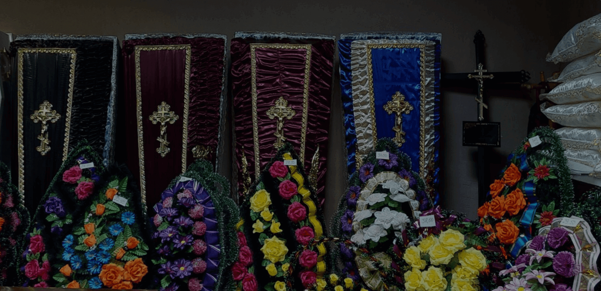

Мы доступны круглосуточно для транспортировки усопшего с использованием нашего специализированного транспорта (катафалка) как в морг, так и из морга в место проведения церемонии прощания. Важно отметить, что выдача тела из морга осуществляется в рабочие часы морга.
полное сопровождение церемонии
Мы предлагаем полное сопровождение ритуальной церемонии, чтобы облегчить ваши заботы в трудный момент. Наша команда профессионалов обеспечит вас всесторонней поддержкой на каждом этапе организации похорон. Мы берем на себя все формальности, помогаем с выбором гроба, оформлением документов и координацией церемонии. Доверьтесь нам, чтобы создать достойное прощание для вашего близкого.

ритуальные принадлежности
Можем предложить широкий выбор ритуальных принадлежностей, включая гробы, урны, венки, кресты, и другие предметы, необходимые для проведения похоронной церемонии. Мы гарантируем высокое качество товаров и заботливое отношение к каждому клиенту в этот трудный период. Наша цель - облегчить вам процесс подготовки к прощанию близкого человека, предоставив все необходимое в одном месте.
кремация
При заказе услуг по кремации, компания "Пинагарант" предлагает оперативную и профессиональную поддержку. Наши сотрудники обладают полной информацией о процессе кремации, необходимой документации и тарифах на услуги кремации в крематории Минска. При необходимости наши специалисты могут устроить своевременную доставку груза 200 в крематорий в Минске.
транспортные услуги
Ритуальный транспорт является неотъемлемой частью процедуры похорон, включая доставку гроба с усопшим для прощания, перевозку на кладбище или в крематорий, а также предоставление автобусов для родственников, близких и других присутствующих. Специальные транспортные средства используются для перевозки тела усопшего на большие расстояния. Мы предлагаем полный спектр услуг по транспортировке на похороны — от доставки усопшего в морг до предоставления катафалков эконом, бизнес и VIP-класса для похорон.
организация поминок
После проведения похорон поминальный обед становится логичным завершением, позволяющим принять утрату, вспомнить ушедшего и поддержать родных. Наши ритуальные агенты помогут выбрать подходящее место для поминального обеда в Пинске, учитывая ваши предпочтения. Мы согласуем меню и оформление зала с администрацией заведения, удостоверившись в доступности мест. Мы работаем только с проверенными заведениями общественного питания, гарантирующими качественный сервис, разнообразное меню и использование свежих продуктов для приготовления блюд.
организация похорон
Наши специалисты готовы взять на себя следующие обязанности:
Организация транспортировки тела усопшего в морг;
Подготовка всех необходимых документов;
Предоставление услуг по бальзамированию по желанию родственников;
Организация похорон или кремации, включая выбор гроба, места на кладбище, ритуальных атрибутов и учет всех деталей мероприятия;
Заказ ритуального транспорта;
Организация поминального обеда;
Уход за могилой в памятные даты.
Оформление документов
Подготовка необходимого пакета документов для похорон и получения социальной поддержки, а также оперативное получение справок и документов с проверкой их точности.
Груз 200
Специалисты компании "Пинагарант" имеют профессиональную подготовку, многолетний опыт и необходимые полномочия для обеспечения надежной доставки груза 200 в любые точки Беларуси, стран СНГ, Европы и по всему миру.
Мы предлагаем полный комплекс услуг, необходимых для перевозки гроба с телом, используя различные способы транспортировки. Независимо от выбранного варианта - самолетом, железнодорожным транспортом или автомобилем - мы гарантируем помощь и поддержку на всех этапах перевозки тела умершего (Груз 200).
Услуги ритуальной бригады
Ритуальная бригада – это крепкие молодые люди, готовые поддержать вас на каждом этапе процесса прощания. Мы занимаемся переноской гроба с телом или урны с прахом умершего и устанавливаем их в траурный автомобиль. Также обеспечиваем доставку ритуальных предметов к месту захоронения или кремации, включая все работы по их погрузке и разгрузке. Кроме того, мы готовы консультировать вас по всем возможным вопросам, связанным с администрацией кладбища или крематория.
Организация похорон
это ответственное и требующее особого подхода занятие, и мы делаем все возможное, чтобы обеспечить наших клиентов высококачественными услугами и поддержкой в трудные моменты. «Пинагарант» предлагает полный комплекс услуг по организации похорон, начиная от транспортировки тела и заканчивая благоустройством могилы. Заказывая ритуальные услуги у нас, Вы можете быть на 100 % уверены, что не переплатите ни копейки. Так как изначально составляется смета и вы будете понимать стоимость
У нас можно приобрести все необходимые товары для проведения похоронной церемонии
гробы
венки
кресты
Обратившись к нам, вы получите не только профессиональную помощь, но и поддержку на каждом этапе организации похорон.
ВАм необходима помощь по подбору и покупке памятника
Закажите обратный звонок
наш менеджер поможет вам выбрать лучший вариант!
ЗАКРЫТЬ
Заполните форму обратной связи
Введите ваш номер телефона и мы Вам перезвоним в течение 10 минут